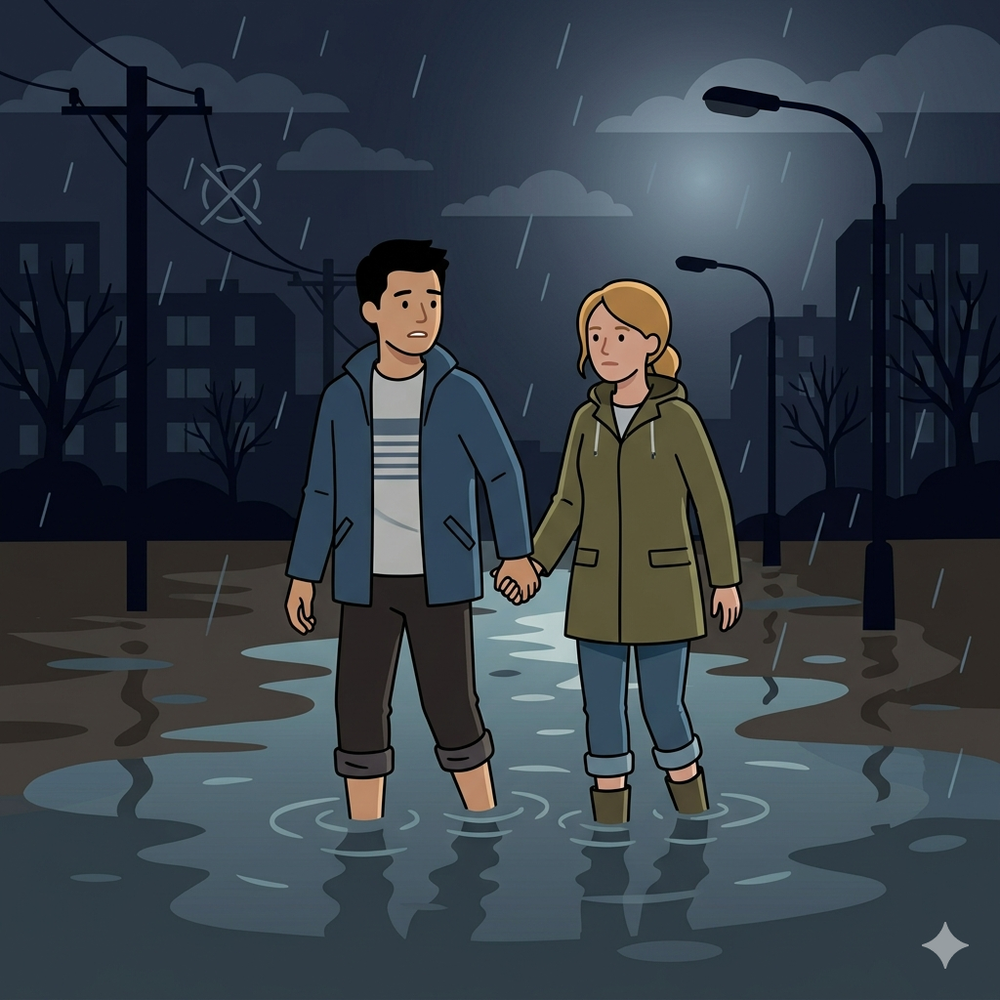

나의 안전 성향 테스트 (Safety MBTI)
위기 순간, 당신의 진짜 대피 스타일을 15개 문항으로 확인해 보세요!
본 테스트는 교육·자가 점검 목적의 비공식 예시입니다.

위기 순간, 당신의 진짜 대피 스타일을 15개 문항으로 확인해 보세요!
본 테스트는 교육·자가 점검 목적의 비공식 예시입니다.
잠깐! 나의 안전 성향 결과를 확인하기 전, ‘안전파수꾼 제로미’ 유튜브를 구독하시면 매달 새로운 생존 게임과 안전 정보를 가장 먼저 받아보실 수 있습니다!